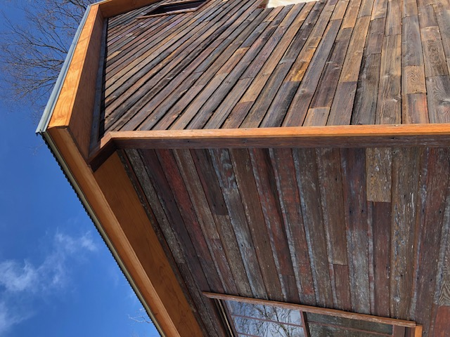
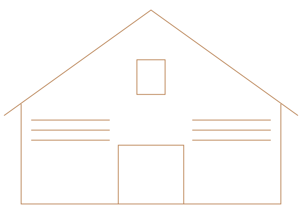

01
A place to gather

The church carries the history of worship and community life. Its materials also tell a story of craftsmanship and careful preservation.
Mt. Tabor AME Zion Church & Cemetery
Encounter the Black community history held here in Mount Holly Springs.

Take time to understand the place
Building, landscape and memory connect a nineteenth-century Black community to the people who care for its history today.

The church carries the history of worship and community life. Its materials also tell a story of craftsmanship and careful preservation.

Family · Service · Memory
The cemetery holds family connections and the resting places of United States Colored Troops veterans.
Visit with care and curiosity. Remembering the people here is part of understanding the wider Black community that shaped Mount Holly Springs.
Meet the history behind the placeCome closer to the story
Visit the church and cemetery through Mount Tabor’s tours and shared-history programming.
Before coming, check the current schedule and ask about the route, parking and access arrangements.
Plan your visit
13 Cedar Street
Mount Holly Springs, Pennsylvania
Contact the project for the current schedule.
Ask about walking surfaces, parking and available accommodations before your visit.
Stories make the history personal
The Gumby family’s stories helped bring Mount Tabor’s history forward. The Ward/Smith family rediscovered an ancestral connection in the cemetery.
Those connections invite us to look beyond the building and learn about the people who made this community.
Have a connection to share?
Recognized. Preserved. Cared for.
Recognition honors the history. Continuing stewardship helps people encounter it.
A call for preservation attention.
The church and cemetery listed together.
Preservation work recognized statewide.
Continuing care: the project’s 2026 priorities include maintenance, access improvements, interpretation and tours.
Help sustain Mount TaborThere is a place for you
Bring your interest in community history and care. Ask where your time and skills can help.
Family memories and historical materials can add to our understanding of this place.
Ask about tours and learning opportunities for your community or group.
Explore visitingHelp care for what connects us
Your support can help sustain the church, cemetery and the work of sharing Mount Tabor’s history.
Preservation is continuing care. Join the people helping this history remain part of our community’s future.
Donation experience shown for design review.